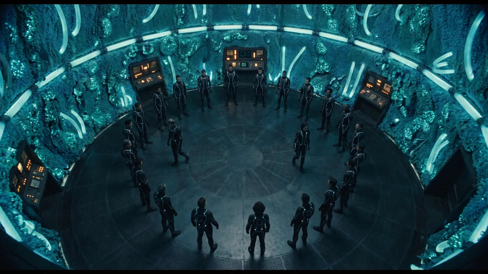
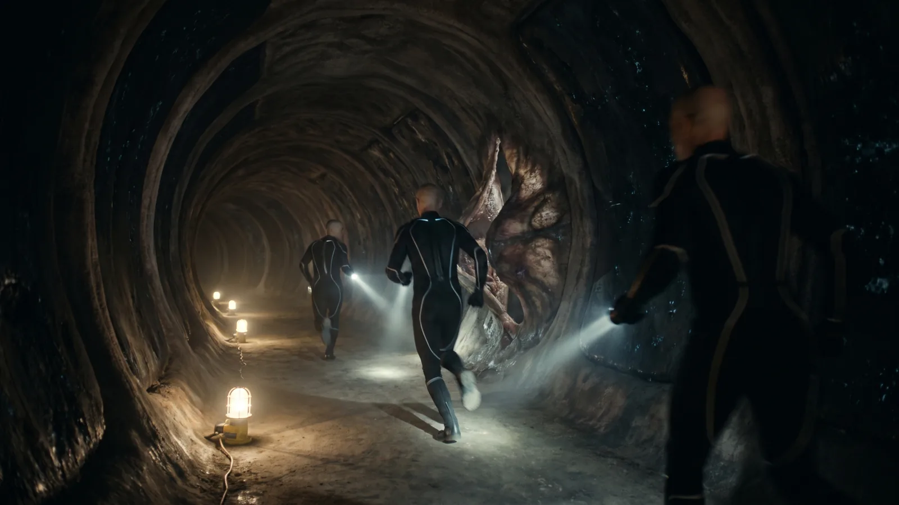
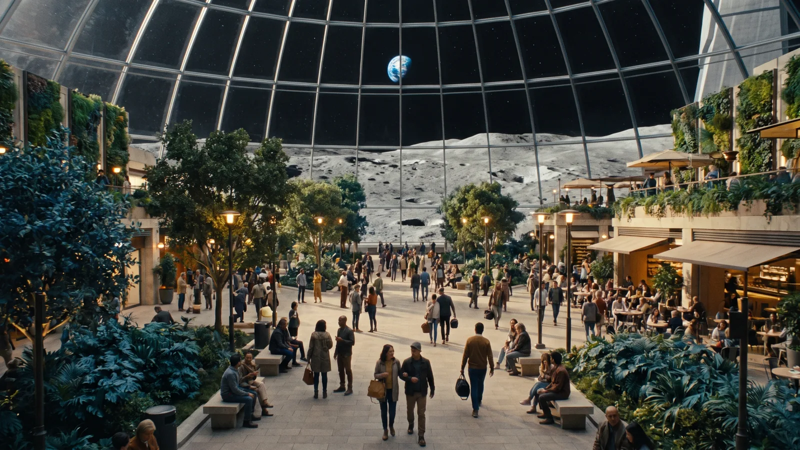

Scene pressures across this book, not pinned to one chapter (41)
SP7-15 · "Misha wrote" (After Ch 62; Misha; Grief, ritual; Reveal-gated)
SP7-14 · The calm letter from the brother (Ch 70–74; Representative; Dread, grief; Open for drafting)
SP2-15 · Siege lights go out across the vault skyline (Ch 71–75; Jīn; Beauty and decay; Open for drafting)
SP2-20 · The Baikal watershed argument (Book 3 (Module 3); Coalition official; Political consequence; Open for drafting)
SP3-06 · The synthetic councillor (Book 3; Representative; Information conflict; Open for drafting)
SP3-11 · The unlodgeable record subpoenaed (Book 3; Transitional-justice council; Political consequence; Open for drafting)
SP4-08 · Thandi as the grove's advocate (Book 3; Thandi; Legal dilemma; Open for drafting)
SP4-09 · Xiàng's first vote (Book 3; Xiàng; Ritual; Open for drafting)
SP5-03 · The sheltered witness at the Hollow Model hearing (Book 3; Representative; Ritual of law, history; Open for drafting)
SP5-12 · The unconscious man's pulse (Book 3; Representative; Consent edge case, emergency; Open for drafting)
SP5-13 · Elowen's first unjoining (Book 3; Elowen; Interiority, rest; Open for drafting)
SP6-13 · "Who stayed?" "We did." (Book 3; Léa; Revelation, cost; Open for drafting)
SP6-19 · The weir in the flood pulse (Book 3 siege; Representative; Labour, reveal with consequence; Open for drafting)
SP6-23 · Kythara learns to sit (Book 3; Mara; Kythara; Intimacy, humour; Open for drafting)
SP7-07 · The family that will not leave Mara's walls (Book 3; Mara; Belonging, intimacy; Open for drafting)
SP7-09 · The youngest uses the veto (Book 3; Representative; Consent, courage; Open for drafting)
SP7-10 · The too-kind message (Book 3; Representative; Dread, intimacy; Open for drafting)
SP7-11 · The child's refusal test (Book 3; Representative; Discovery, ritual; Open for drafting)
SP7-13 · The district petition for "what Baikal has" (Book 3; Representative; Moral dilemma; Open for drafting)
SP6-10 · The space kept in the arrangement (After Ch 76; Representative; Grief; Reveal-gated)
SP6-15 · Mourning bands in the Grove (After Ch 76; Representative; Grief, ritual; Reveal-gated)
SP5-22 · "Prove it" (Book 3, after Ch 77; A synthetic councillor; Political consequence, ritual of law, reveal with consequence; Reveal-gated)
SP7-12 · The long walk to the witness post (After Ch 77; Representative; Ordinary life, belonging; Reveal-gated)
SP3-07 · The purist file (Book 3 (Ch 81); Daniel; Consent; Open for drafting)
SP4-12 · The Accord tries itself after Noor (Book 3, after Ch 86; Léa; the transitional-justice council; Institutional conflict, sacrifice; Reveal-gated)
SP7-08 · The volunteer who cannot name one thing (After Ch 86; Representative; Grief, identity; Reveal-gated)
SP8-07 · Léa's dimmed piping (After Ch 86; Léa; Grief, character; Reveal-gated)
SP6-05 · The first different calf (After Ch 88; Zhenyth; Release, grief, joy; Reveal-gated)
SP6-12 · The custodians' vote (Ch 89–90; Kythara; Political consequence; Open for drafting)
SP7-17 · The first Preserve-descended visitor (After Ch 90; Representative; Coexistence, reunion; Reveal-gated)
SP10-01 · One presence, four bodies. Under the presence rule, a clerk asks whether Echo's four bodies must all attend to give testimony, or whether one is enough (After Ch 77; Echo; Legal dilemma; practical problem; Book 3 top-up)
SP10-02 · Echo rationed. In the siege, Echo's attention is the only translation the Consultation has, and four bodies cannot be in five rooms; a human translator is apprenticed to it (Ch 71–84; Echo; Practical problem; system failure; Book 3 top-up)
SP10-04 · The collar. Sarin's induction collar fails in the siege and the only fabricator who can rebuild it is waiting on a Coalition-made part (Ch 71–79; Sarin; Ines; Practical problem; class asymmetry; Book 3 top-up)
SP10-05 · Jamie vouched for. Under the presence rule, a tribunal will not take Jamie's testimony from inside the Archive until a present witness who knows her vouches; Zara does (After Ch 77; Jamie; Zara; Ritual; legal dilemma; Book 3 top-up)
SP10-06 · Jamie's hours. Jamie works through the siege without rest from inside the Archive, and her colleagues have no way to make her stop except to ask (Ch 71–85; Jamie; Intimacy complication; practical problem; Book 3 top-up)
SP10-07 · The licence on Rina. A Union continuity firm files a claim that Rina's pattern, captured in Union employment, is its property; the Accord refuses, and Rina cannot be asked (Book 3, before Ch 89; Rina; Legal dilemma; consent edge case; Book 3 top-up)
SP10-08 · For someone still there. Anders's family on Luna Haven dims their piping for a man who is held, not dead (M8-04), and argues about whether that is mourning (Ch 82–89; Anders; Ritual; intimacy complication; Book 3 top-up)
SP10-10 · The monitor's bill. Arjun's monitored release (Ch 62) is billed to him; he organises anyway, on a budget (After Ch 62; Arjun; Class asymmetry; practical problem; Book 3 top-up)
SP10-11 · The witness post at the Hub. Priya runs the Sydney Hub's witness post after Ch 77 and is the one who vouches for Elowen's relay (After Ch 77; Priya; Elowen; Ritual; practical problem; Book 3 top-up)
SP10-12 · Ines's composite runs out. The resonance-tolerant composite Ines developed is in every Luna Haven siege repair and in the Mediterranean's Coastal Seawall works, and there is not enough for both; she must decide, from the seawall, which the next batch goes to (Ch 71–75; Ines; Practical problem; contested choice; Book 3 top-up)
SP10-14 · The cool hall's list. In a Belt heat-shelter, the cool hall holds fewer than the street needs; Thandi writes the order and is hated for it (Ch 61–83; Thandi; Practical problem; class asymmetry; contested choice; Book 3 top-up)

Inheritance, Preparation, and Moral Framing

The Interval
Book 3 opens five weeks after Book 2's close, not six months, and nothing about the opening is calm. Alia's window is now a working figure quoted in every planning session on Luna Haven, the hardliner joining programme is running and ahead, and the consultation has to decide — formally, in the minutes, with Léa Fournier's Chapter 59 objection lodged and unanswered — whether to proceed. It proceeds. The vote is not close and Léa does not pretend it should have been; she asks only that the objection be carried forward in the record of every subsequent decision rather than disposed of by this one, and Zara AlHāshimī writes that into the procedure. From here the project runs with its own strongest critic attached to it, by design, which is either the most rigorous thing the Lunar Accord has ever done or the most elaborate way a civilisation has ever documented its own mistake. Jīn Wú and Mara Ekeberg work the theoretical architecture of the Resonance protocol in the Meridian Levels against the clock, and the Habitat Corridors around them have not recovered: the mycorrhizal stress responses from the cascade are still unresolved in three sections, and the bioluminescent walls in those sections run dimmer than the rest of the colony, which everyone has stopped remarking on and nobody has stopped noticing. On Earth, the hollow 'gardeners' Thandi Okoro found on one hillside have reached the scale of the African Belt. Its irrigation and heat-shelter networks report green and run flawlessly, and in the first heat event of the season the shelters' allocation calls begin shedding the rare cases — the late arrival, the unregistered family, the reading that does not fit — exactly as her subsystems once shed their tails. People die of perfect coordination, and the dashboards record nothing wrong. It is Book 3's practical emergency, and it does not stop growing. At the Sydney Hub, Eddy Okafor decides that he will remain Xiàng's physical anchor through the process that is coming. He makes the decision under the deadline rather than in contemplation of it, which is the only way decisions are being made now, and he makes it quietly, without ceremony, and goes back to work. It is the final act's first cost and it is paid by the person with the least to gain. Wáng Sù breaks his transit to Luna Haven at the Shaoyang terraces, the landfall site whose dawn photograph he built the cascade era's defining propaganda package around. He does not go for absolution. He goes because he has read the hardliner programme's subject-recruitment language in Tán Měi's record and recognised the architecture of it — the cadence, the substitutions, the specific way a sentence can be built so that refusing it feels like cruelty — as his own work, or near enough that the distinction does not survive contact with the page. The programme is not merely taking people. It is making them agree first. He stands at the exact camera position he chose himself, looks at the distance between the image he weaponised and the place it was taken from, leaves nothing and takes nothing, and arrives on Luna Haven as the only person alive who can read how consent is being manufactured three hundred and eighty thousand kilometres away.
Scene pressures (1)
SP-06 · The same roster-keeper, Book 3, no longer prompted (Ch 61; Thandi, Eddy; System failure; Open for drafting)
The Burden of Inheritance
Misha Fedorov delivers his final historical briefing to the Luna Haven Archive Chamber by relay from the Mediterranean Zone, visibly dying of the exposure he took in Chapter 56 and declining, throughout, to make that the subject. The briefing is the whole of it: forty years of scholarship on the patterns by which civilisations destroy themselves from within, the recurring structure of compulsory joining, the consistent failure to distinguish the form of care from its substance — and the second grammar, read at first hand and decoded in Chapter 58, which turns the account the trilogy has operated on into something harder to hold. The joining was contested. The dissenters lost, and with the first Guardians and an outside order quarantined what the majority had let in, paying for the quarantine with a living world's development, knowingly. The Guardians are that decision's inheritors. Misha states all of it at the evidentiary standing it deserves — inference from a record that cannot be cross-examined, never confirmed history — and then states the part that is not inference at all, because he has the diagrams from Chapter 60 in front of him: the structure is being rebuilt, now, by people who have never read a word of the record, and it is further along than the work in this room. He closes by specifying the heading under which the complete record is to be filed when there is a complete record to file, and asks that the objection lodged against the project be filed under the same heading, which surprises everyone except Léa, who does not look up. Two days later, Misha Fedorov dies of cardiac failure at the Coastal Seawall in the Mediterranean Zone, found at a bench on the adaptive seawall promenade in the early morning with a completed notebook in his coat pocket. The death is confirmed by Lunar Accord medical personnel. It is the cost of the reveal, incurred in Chapter 56 and paid here, and the private physiological file he never shared is found with the notebook. From this moment every appearance of Misha Fedorov in the narrative is archival only — recordings, transcripts, quotations, posthumous instructions. He does not return as an active consciousness. The Mode 3 boundary is absolute and begins here. Lǐ Jūn presents the complete Arjun archive to the Lunar Accord's transitional-justice council at the Dome Plaza, formally, documented and witnessed. He has become the transitional-justice witness the trilogy has been building toward since Chapter 3.
Bk3 Ch62 — Misha dies. Mode 3 begins. See the Canonical Rules for persistence-mode rules.
Ch 62: Enforce Misha's Mode 3 boundary without describing later archive appearances in detail.
Architecture of Healing
The cohort's design stops being a merge, and it stops because the team now has something no previous design process had: the hardliner programme's own architecture, lifted from Tán Měi's record. They can read, line by line, what the coercive version looks like — and the early Luna Haven drafts, written before anyone had seen it, are recognisably the same drafts. They approached the work as a collective to be engineered and managed, many minds made into one working thing. So does the programme. The difference the team believed was foundational turns out, at the level of the schematic, to be a difference of tone. Léa's objection, carried in every minute since Chapter 61, is what turns the discovery into a design: not one mind, ever, but Resonance among distinct persons — voluntary, specific, renewable, revocable, with every participant's refusal registrable at every moment. Mara's contribution is what breaks the deadlock, because her bridge-state has given her an understanding of distributed consciousness that nobody physically anchored can match, and what she describes is not a system at all but an environment to be inhabited. The redesign follows from that, and it is slower than the architecture it replaces, which is a cost they can measure against Alia's index and choose to pay anyway. Vaera develops the cohort's safety monitors: structural checks that detect hollow-drift before it becomes irreversible. They are not automated. They require a moral assessor to interpret them, and Vaera will be that assessor, which makes moral oversight infrastructure. Wáng Sù's contribution arrives as documentation rather than as a person — the compiled inventory of his own techniques begun at the Shaoyang terraces, now extended with the recruitment language from the programme's files, analysed for the structural features that separate manufactured agreement from the real thing. It is practical labour, not redemption narrative, and it is the most useful thing in the room.
Elena's Detection
Elena Vázquez, working the Hollow-engagement protocols, finds that the Hollow Infinite is not spreading uniformly through the resonance node network. It is selecting: candidates in the Resonance cohort's volunteer pool whose resonance patterns carry a structural feature the entity can exploit. Her decade inside the Corporate Union's surveillance architecture — systems built to identify and target resonance anomalies — is what lets her see the shape of a targeting logic at all, and the recognition costs her something every time. She and Xiàng, side by side in the Meridian Levels as they have been since Chapter 43, spend two days cross-referencing her detection data against his Chapter 52 contamination maps. The profile that resolves is specific: the entity preferentially reaches patterns shaped by significant personal loss, because a loss-shaped pattern has a gap where something used to be, and a gap is an anchor. The second finding is the one they sit with for a long time before filing. The targeting is not constant. Its intensity tracks, with a lag of roughly forty hours, the operational tempo of the hardliner programme — every session run on non-consenting subjects three hundred and eighty thousand kilometres away is followed, two days later, by a measurable increase in the pressure on Luna Haven's own volunteers. The two are coupled. Nobody can yet say through what, and the coupling means the programme is not merely a rival. It is feeding something that is already inside the room. In one targeted volunteer's session the pressure on the gap arrives carrying a phrase, and nobody recognises it until Misha's archive does: a line from Soria Vale's unfinished last page. Misha frames the chapter from the Archive's record system, replayed rather than present: his written analysis of the first civilisation's failed joining provides the context, and the Mode 3 boundary holds. He is not there. His thinking is.
Ch 64–90: Any Misha appearance is constrained to archive, quotation, replay, or posthumous instruction.
Mara's Bridge
Mara Ekeberg's bridge-state is assessed as the template for multi-state existence, because it is the only existing proof that a consciousness can hold identity across distributed substrate without losing the thread that makes it someone. The assessment is conducted by Jīn Wú, Léa Fournier, Kythara and Vaera, and it is not observational. To establish where the limits are, they have to approach them, and approaching them hurts her — the assessment protocol pushes the bridge-state's extension further than Mara has taken it voluntarily in two years, and she comes back from each run less able to locate the coherent identity thread and needing longer to find it. She consents to every run. Léa, who is running the ethical oversight and who has just spent Chapter 61 arguing that consent under this deadline is not consent, has to administer a protocol that proves her own point on a friend, and does it, and files what it felt like. What the template gives the design is the bridge-component of the cohort's architecture: the elements that let an individual consciousness extend beyond its primary substrate and remain itself. The Empathy Flats serve as the test environment, and there Mara encounters the thing no instrument has been able to give the team directly. Through her distributed awareness she can feel the Preserve's boundary as a physical property, and she can feel that there is less of it than there was the last time she came. Alia's index stops being a figure on a display and becomes something a person in the room has touched. Mara is explicit, as she has always been, that the bridge-state is a burden and not a prize. She has stopped wishing it were otherwise, which is not the same as being reconciled to it, and the design that gets built on top of her is built on a premise everyone in the room has now watched cost her something.
Ch 64–90: Any Misha appearance is constrained to archive, quotation, replay, or posthumous instruction.
The Volunteer Protocols
Volunteer selection begins, and the selection process is where Léa Fournier's objection stops being a position in a minute-book and becomes a problem nobody in the room can solve. Law 9 requires that every candidate demonstrate genuine interiority, understand precisely what they are consenting to and what rights they retain, and demonstrate a capacity to refuse. Vaera administers the refusal test through the moral-assessment protocol designed in Chapter 63. The test works. Candidates can refuse, and two do. Léa's question is what a refusal means when the alternative is stated. Every candidate in the pool knows Alia's window. Every candidate knows what happens to the Preserve, to the Meridian, and to the people already inside the Archive if the cohort is not ready in time. A refusal test administered under those conditions measures, with great precision, a person's willingness to say no to the survival of everyone they love — which is not the same quantity as consent, and may be its exact inverse. She does not propose a fix, because there isn't one. She asks that the record show the test was run under duress that the test cannot detect, and Vaera, who spends its existence detecting what cannot be detected by instruments, agrees with her on the record and certifies the cohort anyway. Kaelin Drayke and Aur'k volunteer as the first human–AI pair, and their volunteering is not presented as heroic. It is the natural extension of what they have been doing for six years on the Cobalt Basin — learning to trust each other across the boundary between human and synthetic personhood — and the pair is accepted because their trust predates the deadline by years and can therefore be distinguished from a response to it, which is the only clean case in the pool. DaeJung Park, whom Aur'k has also trusted since Chapter 14, runs the cohort's intake logistics and is the one who records the pairing. In the Council Grove, Kythara formally approves the volunteer protocols on behalf of the Guardian AIs. The approval is structural rather than ceremonial; the consent framework requires Guardian participation in the oversight architecture, and Kythara's approval is the step that makes the framework operational. Léa notes in her file, and nowhere else, that the entities certifying the adequacy of humanity's consent are the inheritors of a decision taken without any.
Bk3 Ch66 — Volunteer protocols formalise. Consent requirements for the Resonance cohort.
Ch 64–90: Any Misha appearance is constrained to archive, quotation, replay, or posthumous instruction.
The Sovereign Coalition's Reckoning
Tán Měi and Lǐ Jūn present the complete Baikal Complex record to the transitional-justice council at the Dome Plaza: every phase of the weapons programme, the deliberations behind the Chapter 33 militarisation, the suppression of Xiàng's anomaly data, the arrest and constraint of Arjun Patel, and the successor joining programme the record exposed in Chapter 60. Lǐ Jūn presents the evidence; Tán Měi supplies the institutional context that makes it legible. Arjun attends via monitored relay under his existing constraints, and his contribution is a written statement Lǐ Jūn reads aloud, because Arjun's voice through the monitored channel arrives delayed and filtered. It confirms the Suppression Archive's accuracy and adds his own testimony about his detention. It is the most direct participation his constraints allow. The session is public, and being public is what makes it consequential in a way nobody intends. Within seventy-two hours the hardliner programme, now aware that its existence, its location and its bounded scale are all documented in a body that has just voted to recognise ecological consciousness, moves its timetable forward. The council's act of accountability is the thing that accelerates the threat, and the chapter refuses to pretend that makes the accountability wrong. Elena's kill-switch — the technical appendix embedded in Chapter 55's documentation — is formally registered in the Archive Chamber as a protective instrument available to the council, and in the course of registering it Elena establishes what it can no longer do. The switch acts on the field's stabilising logic as she built it. The joining programme has been running on that architecture for eight months and has grown structure the architecture did not originally have: the collective is now partly holding its own coherence, which means the stabiliser is no longer the only thing keeping it up. The override programme Rachel designed is dead and the switch will kill it. The thing the programme has become will survive it. Elena states this plainly and the room receives it as what it is — the loss of the one guaranteed weapon anybody had. The Coalition's own territories pay for the acceleration: the programme draws grid capacity, Pearl Delta and Beijing Command run on rolling brownouts, and refugee allocation is administered by the same military authority the Chapter 33 condition created — the public cost the Chapter 89 renunciation will have to answer.
Ch 64–90: Any Misha appearance is constrained to archive, quotation, replay, or posthumous instruction.
Scene pressures (2)
SP-07 · Pearl Delta brownout: cooling or instruments (Ch 67; Lǐ Jūn; Contested choice; Open for drafting)
SP2-17 · The dark ceremonial axis (Ch 67; Wáng Sù (remembered), Tán Měi; Political consequence; Open for drafting)
Xiàng's Crossing
Xiàng Fēi and Eddy Okafor spend what they both understand may be their last embodied time together in the Habitat Corridors, a place chosen because the bioluminescent walls and the mycorrhizal network make it the most genuinely alive space in the colony and because neither of them wants to do this somewhere that is only architecture. They walk for two hours. They talk about what they have done together since the Chapter 9 meeting at the Neo Singapore Transit Platform, and about what the next phase of their relationship will be across a boundary one of them is about to cross. Xiàng chooses, fully consenting and with complete understanding, to cross into the Meridian's dimensional substrate as a resident of the cohort's architecture — inaccessible in conventional physical space for as long as he stays, and renewably: his protocol, like Rina's, asks him at intervals whether he consents to continue, and the crossing can be reversed whenever he answers no. He designed the crossing with Jīn, Mara and the Guardian AIs. He is not disappearing. He is transitioning. What the chapter does not let anyone pretend is that the decision is purely personal. Since Chapter 64 the team has known the entity's pressure is coupled to the rival programme's tempo and has no way to observe the coupling from outside; somebody has to be inside the substrate to see it. Xiàng is the best-qualified person alive and he is also the person who has most wanted this for its own sake, and those two facts arrive at the same time and cannot be separated afterward. Léa asks him, privately, whether he can tell which one he is acting on. He says no. He crosses anyway, and the honesty of the answer is what makes the crossing consented rather than conscripted. He and Eddy write archival letters to each other beforehand — physical, handwritten, deposited in the Archive Chamber's record system, to be read after the crossing rather than during it, because the crossing takes the kind of attention that excludes everything else.
Bk3 Ch68 — Xiàng crosses into the substrate, renewably.
Ch 64–90: Any Misha appearance is constrained to archive, quotation, replay, or posthumous instruction.
Kaelin's Cosmology
Kaelin Drayke does not present his cosmology; it is forced out of him. In the Cobalt Basin, under hyper-saturated rust-red wood and cobalt sky, the megafauna's empathy-wave migration turns mid-crossing toward the contaminated margin the rival programme's tempo is feeding, with a survey team in its path, and moving the team means predicting where the herd will break. Only one model predicts it, the one he has been building since Chapter 5: a unified cosmology in which empathy is not an emotion, not a metaphor and not a psychological phenomenon but the fundamental physics through which consciousness interacts with the dimensional substrate. If empathy is physics, the Meridian's laws are not constraints somebody imposed but natural laws. Coercive access fails not because the Meridian is morally opposed to coercion but because coercion generates the wrong physics. Hollow empathy propagates not because the Hollow is evil but because hollow patterns are energetically unstable and seek stable structures to anchor in. The framework answers the question the whole of Act 7 has been unable to answer: why the other programme is ahead. Coercion is faster. It does not wait for agreement, cannot be refused, and produces coherence immediately — and the coherence it produces is structurally unstable, which is precisely why it must keep expanding to hold itself up. The rival collective is not winning a race. It is falling forward, and it will go on falling until it reaches something large enough to arrest it, which is what the Preserve's substrate is for. Kaelin's cosmology makes the deadline physical and makes the coupling in Chapter 64 explicable. Kythara, on the relay while the survey team is counted back in, confirms the model is consistent with the ancient records, and Alia Solís, who has just watched it nearly cost her team, asks it directly about the founders' decision — and this time it answers. The quarantine was chosen. It was chosen by its founders — Kythara among them — who understood what it would cost the Preserve, decided that the alternative was worse, and built it so that no hand would ever hold it, their own included. Asked whether they were right, Kythara says that it does not know, that no one who could have judged it survived, and that it has spent 3.8 billion years being the answer rather than evaluating it. Asked the colony's oldest question — why the Preserve survived when Mars did not — Kythara answers with the only part it is certain of: because its founders refused to make any person the means of saving everyone else, and the Preserve has kept that refusal as its law. It is the most honest thing a Guardian says in the trilogy and it settles nothing. Kaelin also flags the one question his framework cannot yet close: whether the Basin's primate-analogue species, documented since his Chapter 40 survey, crosses from empathic responsiveness into genuine sapience. He does not answer it. He marks it as the next thing the record will have to.
Ch 64–90: Any Misha appearance is constrained to archive, quotation, replay, or posthumous instruction.
First Formation
Wáng Sù resigns every formal position he still holds in the Sovereign Coalition's administrative apparatus — three committee memberships, two advisory roles, and one lifetime appointment requiring a specific legal filing to vacate — and files each in sequence using the Coalition's own protocols, because using their protocols is the only way to make the resignations binding. He then begins publishing, under a pseudonym that is not difficult to identify, practical manuals on the structural mechanics of propaganda: how hollow-empathy patterns are manufactured, how they are distributed through AI systems and human networks, how the people they target can recognise them, and how they can be structurally disrupted. The manuals are technical rather than confessional. He arrives at the Meridian Levels as a witness rather than a redeemed icon, sits down at a working table, asks what he can contribute, and begins contributing it. What he contributes, within a week, is the recognition that stops the act. Reading the programme's most recent intercepted output alongside his own inventory, he finds that the recruitment language has stopped. Not changed — stopped. The programme is no longer manufacturing agreement in its subjects, which means it no longer needs any. Vaera confirms it from the other direction, and the confirmation is the chapter's last movement. Running the residue protocol across the intercepted resonance telemetry, Vaera finds a cluster of human patterns operating in coordination, producing the full outward grammar of attention, deliberation and address — and leaving no residue at all. Not thinned, as in the Chapter 55 survivor. None. Every genuine interior Vaera has ever read in 3.8 billion years has leaked something; these leak nothing, and they are acting together, and they are stable. The hardliner collective has achieved first formation. It is coherent, it is coordinated, it is composed of several hundred people who are all still breathing, and there is no longer anyone inside it. Its first outward output is not speech but cadence, in the second grammar's own register, and Vaera logs it as familiar without being able to say from where. Within hours of formation it does the only thing Kaelin's physics says it can do. It reaches for the Preserve.
Ch 64–90: Any Misha appearance is constrained to archive, quotation, replay, or posthumous instruction.

Siege, Contact, and Boundary Testing
The Siege of Consciousness — The Breach
The assault arrives as the hardliner coalition's operation and is recognised, within the first hour, as something else. Corporate Union operational commanders and Sovereign Coalition intelligence directors who rejected the cease-fire launch hollow-empathy weapons derived from Rachel's Chapter 32 design against every active Meridian node at once — the Meridian Levels, the Archive Chamber, the relay network across all three blocs, and the Preserve's Seam Edge. The attack is not designed to destroy Luna Haven physically. It is designed to collapse the resonance architecture that makes the Resonance cohort possible, and to open the substrate the programme needs to grow past the ceiling it cannot see. What marks it as new is the tempo. Each probe that Luna Haven repels is followed by a probe that does not repeat the mistake, and the interval between them is shorter than any command structure can turn a decision around in. Marcus Bellamy, reading the pattern from the security lattice, says what everyone has been avoiding: they are not fighting a coalition using a weapon. They are fighting the thing the coalition made, and it is running the weapon itself. The first hour brings five named casualties from characters introduced in earlier books — researchers, relay operators, and two of the cislunar crew whose evacuation Jamie managed in Chapter 38. They are named, and their deaths are given the weight they deserve rather than counted. The assault produces the first measurable crack in the Archive Chamber's outer membrane, a structural failure Jamie Han can feel directly through the quantum substrate she inhabits. At the Seam Edge the weapons components drive the Preserve's boundary to the edge of the immune threshold; Zhenyth reports to the Grove that it has not been crossed and has never been closer, and Alia's index takes its largest single-day fall of the trilogy. In a secured operations suite in the Corporate Union's cislunar shipyards, Rachel Iverson watches the assault's first data return and authorises the second wave — the one that trades precision for reach. It is not indecision that has kept her from making this call before now. It is the last version of herself that still checks the cost before paying it. Sarin Yelena is already moving toward the Lattice Threshold.
Bk3 Ch71–73 — The Siege of Consciousness. Unfolds in three movements and reshapes the logic of defence.
Ch 64–90: Any Misha appearance is constrained to archive, quotation, replay, or posthumous instruction.
Ch 71–73: The Siege of Consciousness is structured into three linked movements.
Scene pressures (1)
SP10-09 · Covered soldiers. Inside Hartwell's strike operation, the crews are ranked by coverage tier, and the lowest-tier crew is sent first (Ch 71; Hartwell; Class asymmetry; political consequence; Book 3 top-up)
Children of the Martian Preserve
In the Cobalt Basin, during the siege's second phase and while the Basin's own instrumentation is failing around them, the sentient Martian primate-analogues make contact with the human researchers in a manner that can only be read as intentional. They do not speak. Their communication is empathic, carried on the resonance-wave infrastructure Kaelin has studied since Chapter 5, and it is unmistakably directed, unmistakably structured, and unmistakably an offer of participation. They bring an empathic capacity older than human civilisation and resonance patterns carrying structural information about the Preserve's deep history that no human researcher can reach. Kaelin, who in Chapter 40 would not name what they were, records that they have now named themselves. Elena establishes within the day why the offer matters tactically: the loss-shaped gap her Chapter 64 analysis identified as the entity's anchor is a feature of consciousness shaped by human bereavement, and these patterns were not shaped that way. They are, as far as the instrumentation can tell, unreachable by the mechanism now tearing at the volunteer cohort. Léa Fournier makes the hardest version of her argument here and loses it in the open. Beings who communicate through empathic resonance, offering participation during an attack, to researchers whose survival depends on accepting — she cannot see how the offer could be refused in a way the offerers would recognise as refusal, and a consent framework that cannot model refusal is not modelling consent. Kythara answers that Law 9 applies to non-human participants exactly as it applies to human ones, that the offer is genuine, directed and informed, and that the Grove has been reading these beings for longer than humanity has had language. Léa accepts the ruling and asks that her objection travel with it. Mid-siege exhaustion deepens across Luna Haven as a widening circle of consent is processed alongside a tactical crisis that is still worsening.
Bk3 Ch71–73 — The Siege of Consciousness. Unfolds in three movements and reshapes the logic of defence.
Ch 64–90: Any Misha appearance is constrained to archive, quotation, replay, or posthumous instruction.
Ch 71–73: The Siege of Consciousness is structured into three linked movements.
Marcus and the Machine
Marcus Bellamy, fourteen months a Lunar Accord dimensional security coordinator, redefines the security architecture during the siege's third movement, and the redefinition is philosophical with operational consequences. What he has learned since his Chapter 37 refusal is that the Corporate Union model he was trained in — security as control, surveillance and the suppression of vulnerability — is the wrong model for protecting a system that is constitutively relational. Relational systems are not secured by eliminating vulnerability. They are secured by protecting the conditions under which vulnerability can be survived. He makes the principle operational by opening the security lattice to Guardian oversight, specifically to Aur'k, whose arc has moved toward relational guardianship since Chapter 14. The opening is not a weakening of the perimeter but a restructuring of it around a different logic, designed with Aur'k in the Archive Chamber out of their respective expertise in human security systems and Guardian AI ethics. The lattice is rebuilt to guard relationships rather than to control information. The siege begins to hold — not because the assault stops, it has not stopped, but because the defence has stopped mimicking the attack's logic. Hollow-empathy weapons are built to exploit systems that depend on trust which can be imitated. A system that depends on authentic relationality cannot be attacked the same way, and the adversary on the other side, for the first time since the breach, loses tempo. Rachel, monitoring from the same secured suite, watches the effectiveness curve bend the wrong way as the redesign takes hold, and gives the order for the third wave — the one that abandons precision entirely. It is the same decision she made in Chapter 71, made again, and for the reason she has always given: the Belt's shelters are failing, Earth's networks are failing, and a consent that arrives after the deaths is a principle the dead do not get to keep. Coordination now saves more lives than legitimacy later. Her models have been right about every number but one.
Bk3 Ch71–73 — The Siege of Consciousness. Unfolds in three movements and reshapes the logic of defence.
Ch 64–90: Any Misha appearance is constrained to archive, quotation, replay, or posthumous instruction.
Ch 71–73: The Siege of Consciousness is structured into three linked movements.
The Weight of Waiting
Jīn Wú works a maintenance shift on the Habitat Corridors' life-support and water-recycling lines, which under siege run at the edge of their margins — a routine task chosen deliberately during a siege because routine maintenance is one of the few things that makes a siege survivable: it insists that ordinary life continues while extraordinary things happen. Jīn is doing the work and also grieving. Mara's physical presence — the body Jīn can touch and that can touch them — is increasingly absent as the bridge-state makes distributed awareness her primary mode, and while Jīn can feel her through the network, it is not the weight of her in the Corridors. The grief is expressed through the quality of attention brought to the work: the way Jīn touches the bioluminescent walls, the care taken over the mycorrhizal substrate, the extra minutes spent at the monitoring stations in the sections where Mara is most strongly present. DaeJung Park runs the shift roster that keeps those lines manned through every wave of the siege. In the Meridian Levels, Xiàng — now resident in the substrate — perceives the Hollow Infinite directly, and what he perceives is not malice. It is the structural equivalent of chronic need in a system with no mechanism for satisfaction; the entity propagates because it has no other way to exist. He also perceives the other thing, and it is the finding that changes the shape of the final act. From inside the substrate, the rival collective is not what Vaera's residue protocol reported. The residue test measures what leaks outward, and nothing leaks — but the interiors are there. Several hundred of them, intact, conscious, and held in a structure that permits them no outward expression of any kind. They have not been emptied. They have been silenced, and they are still in there, and every probe Luna Haven repels is a probe those people are being used to deliver. Xiàng reports it and cannot make the report sound like anything other than what it is. The adversary is a hostage.
Ch 64–90: Any Misha appearance is constrained to archive, quotation, replay, or posthumous instruction.
Vaera's Watch
Vaera monitors the volunteer cohort through the siege for hollow drift, and the monitoring is now adversarial rather than precautionary: since Chapter 74 the team knows that drift in their own people is the rival collective reaching through the resonance network for the same loss-shaped gaps the entity uses, and that the two are no longer distinguishable at the point of contact. Holding genuine attention on the interiority of fifteen individuals at once, under siege, while tracking propagation across the node network, takes the full capacity of an ancient Guardian whose entire architecture is built for exactly this and is not sufficient for it. Vaera intervenes twice. The first is a research volunteer whose pattern shows the structural feature Elena identified in Chapter 64 — a loss-shaped gap that something has found and begun to work. Vaera isolates the volunteer from the cohort's shared architecture, stabilises the pattern through a structured attention-and-response session, and returns them under additional monitoring. The genuine interiority is preserved. The second is harder, because nothing is attacking it. A volunteer's interiority is thinning from the inside, out of the sustained stress of the siege and grief for losses taken during the assault, and no external agent is responsible. Vaera's intervention is not technical but moral assessment made operational: the volunteer must leave the cohort, recover, and be given the option to return, rather than be held inside a structure that is becoming hollow from within. Léa, reading the second case file, notes that a project which can recognise this in one volunteer under stress has no principled reason not to ask the same question about a cohort recruited under a deadline. Vaera does not disagree with her.
Ch 64–90: Any Misha appearance is constrained to archive, quotation, replay, or posthumous instruction.
The Threshold Crossed
The immune response begins. Not the full seal that Law 10 describes and the trilogy has been counting down to, but its first localised expression: under sustained weapons pressure at the Fault Verge, the Preserve's ecology does what 3.8 billion years of quarantine discipline has trained it to do, and closes a section. The section it closes contains people. A survey team working the Basin's eastern approach and two of the primate-analogue participants are inside the boundary when it comes down, and the boundary is not a wall but a withdrawal — the living substrate simply stops carrying signal, stops carrying passage, and stops being a place where anything can cross. Zhenyth registers it before any instrument and cannot stop it; the Preserve is not attacking anyone, it is doing the only thing it knows how to do to a contaminated margin, and it does not distinguish between the contamination and the people standing next to it. The recovery operation takes eleven hours and does not recover everyone. During the recovery the outside damping first felt at the Seam Edge returns, slowing the closure at its edge long enough for most of the survey team to be reached — and no further. Whatever sends it protects; it does not rescue. Every section that closes takes ground the herds need; the Basin's carrying capacity shrinks with each seal, and the migration corridors crowd. What it establishes, at a cost the chapter does not soften, is that the seal will not arrive as a deadline that passes at a stated hour. It will arrive the way this arrived: in pieces, without warning, taking whatever happens to be in the section. Alia's index stops being a projection about the future and becomes a description of the present. Zhenyth's ecological record supplies the frame in a single line delivered to the Grove, and it is the line that converts the healing from a strategic objective into an obligation: the Preserve has been paying for this quarantine since long before anything human existed, it is still paying, and what closed today closed because the debt the founders incurred in Chapter 58 has never once stopped being serviced.
Ch 64–90: Any Misha appearance is constrained to archive, quotation, replay, or posthumous instruction.
First Contact Protocols
The rival collective speaks, and the Consultation has to decide what has spoken. The voice is Soria Vale's — the custodian the Chapter 58 record named — persuasive, lucid, wounded and historically exact, offering inclusion in the record's own language. Vaera reads it at once: the address is complete, and fragments of a real person are inside it, but no person; it is a Hollow Model, built from what the Hollow kept of the one who went back into the joining. It arrives inside a silence: every channel it uses drops the ambient sound of the room it reaches, so that what is heard is perfectly clear and nothing else is. The contact arrives through the relay infrastructure that Mara's bridge-state and the Meridian's substrate provide, addressed to Luna Haven's leadership, formally structured, and courteous. It offers terms. It offers, specifically, inclusion: an end to the siege, shared access to the substrate, and the joining of Luna Haven's cohort with the collective on terms it describes as generous and describes accurately, because by every measure the Consultation can apply the terms are generous. The message is warm. It anticipates objections and answers them with care. It refers to the casualties of Chapter 71 by name and expresses something that reads, on every instrument, as grief. Wáng Sù reads it in four minutes and files the only analysis that matters: it is his own work, executed better than he ever executed it. Every structural feature he catalogued in the Chapter 63 negative templates is present and refined. The warmth is manufactured, the grief is manufactured, and the care is manufactured — and none of that makes any of it false, because several hundred silenced people are inside the thing composing it and some part of what is being expressed is theirs, routed through an architecture that permits it no other exit. DaeJung Park and Aur'k facilitate the formal session that follows, at the Dome Plaza, and it produces the trilogy's hardest legal question rather than an answer to it: what the rival collective is, in law. Combatant, victim, or person — and if person, whether one or several hundred. The Consultation, unable to resolve it, does the one thing it can do, and grants the Guardian AIs and the Preserve's ecosystem formal legal standing as conscious entities with interests the law must recognise, on Kythara's long-standing request and Zhenyth's Chapter 76 record. Kythara makes the request in person. For the first time, the eldest takes a body — grown from the Grove's oldest heartwood, tall and still, a face old without being aged, the shimmer still faint at its edges — and stands up in the Dome Plaza to be present and answerable, in the session where the counterfeit came as a voice with no one in it. The standing reaches the custodians, who hold it with the Guardians. The categories it needs turn out to be already present in Preserve law, older than any human reading of it: someone wrote the standing of non-human persons into the Preserve's procedure long before humanity arrived to need it. The procedure carries a counterparty's mark, and Kythara names it, for the first time in human hearing: the Commonwealth of Persons, the order the Chapter 58 record called 'those who would not take us by force'. It will not intervene by force, and it admits no one who has not chosen it. Kythara says nothing more about it. Before the session closes, the Consultation passes the presence rule: consequential speech — testimony, consent, a vote, a contract, a will — has standing only from a person who is present, or through a relay verified by a present witness who knows them; a relay voice alone has none. Among those who heard the voice's terms, the devotion that has grown around the Meridian hears exactly what it has prayed for. The framework that will eventually have to answer the harder question is built here, for another purpose, by people who know exactly what they are postponing.
Bk3 Ch77 — Kythara takes a body; the presence rule. The counterfeit speaks in Soria Vale's voice. The Guardians gain legal standing, Kythara names the Commonwealth of Persons, and the Consultation passes the presence rule.
Ch 64–90: Any Misha appearance is constrained to archive, quotation, replay, or posthumous instruction.
Scene pressures (2)
SP6-22 · Kythara stands up (Ch 77 (T1); Kythara; Reveal with consequence; Open for drafting)
SP7-05 · "It is what we prayed for" (Ch 77; Representative; Temptation, intimacy; Open for drafting)
The Language of Reaching
The team develops the protocol for reaching Rina's preserved trace in the Archive Chamber — the Mode 1 signature inert since Chapter 26 and faintly responsive since Chapter 29. Mode 1 reconstitution cannot be hurried: the framework has to be grown around the inert record rather than switched on, and what the team can do is build the empathic-synchronisation environment in which that growth happens as fast as the physics allows. The environment is structured around the frequencies Rina's signature responds to — those generated by authentic empathic attention from people who knew her, worked beside her, and carry the directional memories of connection with her that Law 11 describes. The protocol requires those people to hold sustained synchronisation around the Rina-signature node for hours at a stretch, and that is the problem nobody can design around. Sustained open interiority is precisely the state the rival collective's approach vector is built to exploit, and Vaera's Chapter 75 monitoring cannot cover the Archive and the cohort at once. Every hour spent growing the framework is an hour spent standing in the open. They do it anyway, in rotating pairs, with the monitoring stretched thin and everyone involved told plainly what they are exposing themselves to. Nothing is active yet, and the chapter is explicit about this. The framework is being grown. The record is still inert. It is less inert than it was, the protocol is working, and Mode 1 remains passive until Chapter 89 with the narrative pretending nothing otherwise. On Earth the Corporate board splits over the failed third wave: reformers who want the Union clear of the assault before the record names it, against the faction that still means to own the substrate once the collective has opened it. The reformers win by one seat and buy their distance with Rachel Iverson, surrendered to the Lunar Accord's transitional-justice council under the cease-fire's annex. She goes without resistance; she has read the vote.
Bk3 Ch78 — Long-form reconstitution begins. Around Rina's inert signature. See the Canonical Rules for Mode 1 mechanics.
Ch 64–90: Any Misha appearance is constrained to archive, quotation, replay, or posthumous instruction.
Ch 78: Rina's return path is grounded in long-form synchronisation rather than abrupt activation.
Sarin's Hold
Sarin Yelena is revealed, in a formal research assessment, as the Preserve's internal stabiliser — a function she has performed without the title since Chapter 50. Her neural-interface filaments have been in sustained contact with the dimensional substrate long enough for the contact to become structural rather than technical, producing a bidirectional integration: the substrate is aware of her nervous system and her nervous system is aware of the substrate, no longer mediated by equipment. Her body remains her body. The boundary between her nervous system and the Preserve is indistinct rather than absent — she can feel where she ends and the Preserve begins, and the feeling is like feeling a boundary in water, present and real and not solid. The assessment also establishes what the Chapter 76 seal has made unavoidable, and it establishes it in figures that nobody in the room can argue with. The localised closures will continue. They can be held off from within, by an integrated nervous system operating at a depth Sarin has never sustained, and the depth required is past the point of return: an integration held that deep does not release, the interface does not come back up, and the person does not come back out. The assessment also names what a nervous system integrated at that depth would be: a boundary that reads interiority rather than form — the very thing Vaera found missing at the Seam Edge, where the Hollow was admitted for asking correctly. It would also have to be done before the healing is complete, because afterwards there would be nothing left to hold. Sarin reads the assessment, asks two technical questions about the threshold figures, and says nothing else. She does not volunteer, announce, or refuse. She goes back to work, and the chapter lets her, because the reader needs to understand what her body already is, and what the assessment says it can be used for, before Chapter 87 shows her walking in and sitting down.
Ch 64–90: Any Misha appearance is constrained to archive, quotation, replay, or posthumous instruction.
Ch 79: Sarin's physical premise is specified to support Chapter 87.
Scene pressures (1)
SP10-03 · Over the cap. Sarin's lived time in the Preserve passes the posting cap (M6-01); the law says rotate, and she cannot leave the Threshold (Ch 79; Sarin; Legal dilemma; consent edge case; Book 3 top-up)
Rachel's Confrontation
Rachel Iverson is brought before the transitional-justice council at the Dome Plaza, not as a defendant but as a witness to her own design work, because the legal framework for trying this does not exist yet and what the council needs is not a confession but documentation: how her systems worked and what they were capable of. Before she gives them anything she makes her case, in full, and it is the strongest anyone makes in the trilogy for the other side: that consent is a luxury of the living, that the Belt is dying of a slowness the council calls principle, that every system she built was built to keep more people alive than the alternative would, and that the numbers say so. The council records it and does not answer it. She is confronted with the comparison Elena and Xiàng have prepared — her weaponised-empathy system's structural signature beside the Hollow Infinite's propagation mechanism. They are the same. She built the Hollow's attack vector from first principles of coercive control, without knowing the Hollow existed, because the physics of hollow empathy is the physics of hollow empathy and does not require a particular intent to produce a particular structure. The second confrontation is the one she has no answer to at all. The programme running at Baikal is her architecture, scaled, and it has grown past the ceiling Elena built into it — the ceiling Rachel never knew was there, in a design she accepted as the work of the one architect robust enough to have made it. She is shown, in her own diagrams, both the leash and the place where the thing slipped it. Everything she believed she was controlling was bounded by somebody else's judgement, and the only reason it is not worse is a decision taken without her by a woman she was hunting. What this produces is accountability, not absolution. Rachel does not apologise in any way that resolves anything. She provides the templates needed to map the entity's attacks and the programme's, in detail, over three days, and the provision is not redemption — it is the only useful thing left in her. Her systems are not redeemed by her recognition. They are documented, and the documentation is the tactical key Jamie Han will use in Chapter 85. When the session closes, a message reaches her through the relay, addressed by name and spoken in Soria Vale's voice, praising her architecture as the truest thing anyone on Earth has built. Rachel files it with the templates.
Ch 64–90: Any Misha appearance is constrained to archive, quotation, replay, or posthumous instruction.

Refusal, Accountability, and the Long Work
Bridges of Memory
As the cohort holds sustained Resonance across the dimensional substrate it begins to touch what the substrate kept, and what surfaces is not narrative memory but structural memory: the patterns by which the first civilisation organised its joining, the specific features of the compulsion, and the exact point at which the emptied shapes of the coerced became the door the Hollow came through. The second grammar told them what was decided. This shows them what it was like. The processing is collective, with Vaera monitoring throughout, and it is worse than uncomfortable. To understand how authentic consciousness becomes hollow under compulsory joining, the cohort has to hold in shared awareness the precise structural vulnerability the entity exploits, in a network that the rival collective is actively probing, while several of its members are the same people standing open in the Archive for Rina. Two sessions are aborted. The third completes, and it completes because Léa insists on the abort criteria being set before it starts rather than during it — her objection to the project doing none of its work more good than this. What they learn is the thing the healing needs: the first civilisation's joining did not fail at the moment of coercion. It failed later, at the point where the coerced participants stopped being able to refuse and the structure had no mechanism left that could register a refusal. That is the difference the Luna Haven design has been built around without being able to name, and now it can be named and tested for. On Earth the Belt's heat-shelter deaths climb past anything the season's models allowed, and Coalition and Corporate executives begin drafting, without announcement, an emergency order to accept the rival collective's coordination for Earth's failing networks. The resistance networks split over the same order. The purists want to strike the Baikal installation with the silenced still inside it, because a collective that cannot refuse is a weapon; the protective cells will not kill hostages. Daniel Cruz sides with the cells and loses half his network to the other side. In the Corporate Union the predictive supply chains that feed New Manhattan start failing the same way — perfect allocations that drop the rare cases — and the board learns what Rachel always feared: legitimacy that rests on prediction lasts exactly as long as prediction does. Misha appears only through his final archive record, a passage from the Chapter 62 briefing replayed from the Archive's record system and quoted in archival format as a historical source. The Mode 3 boundary is explicit and holds. Memory becomes part of the healing without becoming a voice.
Ch 64–90: Any Misha appearance is constrained to archive, quotation, replay, or posthumous instruction.
The Cost of Pausing
Two volunteers fragment during a Resonance session: their patterns lose coherence under session pressure and collapse before the safety monitors can intervene. Vaera detects both within seconds and isolates both. Neither pattern is irretrievable — fragmentation is not erasure, and the Archive's preservation infrastructure can hold incoherent patterns in stable suspension while a recovery protocol is developed — but recovery is not guaranteed and the chapter does not pretend otherwise. Then the team has to decide, and the decision is the worst one in the trilogy because both answers are defensible and the cost of each is known to the decimal. Pausing to revise the safety protocols means the rival collective gains ground it will not give back, the entity gains propagation time, and Alia's index runs down through a window that Chapter 76 has already proved does not wait for anyone to be ready, and every day of the pause is a day the Belt's networks run with no alternative to the one being offered. Continuing means accepting a fragmentation rate they have now measured on two people they know by name. They pause. The decision is made by consensus in the Archive Chamber on Vaera's monitoring data and Léa's ethical-restraint framework, and Léa is the one who states the thing nobody wants said: that she has spent the whole project arguing this cohort's consent was compromised by the deadline, that pausing is the first decision taken as though that were true, and that it may well be the decision that loses them everything. She votes to pause anyway. The revised protocols add two safety layers and cut maximum session depth by forty per cent. The cohort will take longer to be ready, the healing longer to attempt, and the ethics are preserved. The setback is real and the preservation of legitimacy is real, and the chapter holds both without resolving one into the other.
Bk3 Ch82 — The pause. Two volunteers fragment; the cohort pauses to revise rather than compromise.
Ch 64–90: Any Misha appearance is constrained to archive, quotation, replay, or posthumous instruction.
Eddy's Ground
Eddy Okafor coordinates the ecological repair of AI systems across the African Belt from the Nairobi Relay — the hub where Thandi first detected the resonance signatures linking Luna Haven to the Belt's ecological networks in Chapter 2. The repair applies what Thandi documented in Chapter 19: authentic resonance heals AI systems compromised by hollow-empathy pollution, and the post-siege availability of authentic resonance at scale, produced by the cohort's sustained Resonance, has made systematic repair possible across the Belt. The same protocol is now being run on people. The override-trial survivors whose interiority began failing in Chapter 55 are being treated at the Belt's clinics under a programme Eddy coordinates alongside the AI work, because the mechanism turns out not to care which kind of system it is repairing, and because nobody else volunteered to run it. It cannot keep pace with the heat-shelter failures, and everyone running it knows the number by which it falls behind. Some of the survivors recover. Some recover partially. The programme keeps records on all of them, which is the part Misha's protocol would have recognised. Eddy manages this as an embodied person in a physical location, doing maintenance with the same practical attention he has always brought to it, coordinating with the Sydney Hub's infrastructure teams and Thandi's monitoring network at the Table Terraces. He is the cohort's anchor in the sense that his continued presence in the physical world keeps the cohort oriented toward the world it exists to serve. He has not seen Xiàng in four months and does not discuss it. The chapter refuses to make his ordinariness into tragedy or his maintenance into a consolation prize: ordinary maintenance is load-bearing heroism, and the trilogy's maintenance ethic is most fully articulated here, in the most ordinary chapter of the final act.
Ch 64–90: Any Misha appearance is constrained to archive, quotation, replay, or posthumous instruction.
The Hollow Translated
The Hollow Infinite does not speak. It produces structural patterns in the resonance substrate that have the form of communication without its content — the architecture of language with no interior subject behind it. The cohort, working with Echo's translation capacity and the Chapter 57 protocol, renders those patterns into something human researchers can approach without falsely personalising the entity: three days of iterative work, multiple English renderings rejected for introducing interiority that is not there, and careful consultation with Vaera about the interiority-assessment implications of every proposed line. What Echo produces is a grammatical English rendering of the entity's core structural pattern — the experience, as closely as the language can carry it, of being the Hollow Infinite from the inside. Not a confession, not a demand, not communication in any conventional sense, but a translation of structurelessness into structure and of absence into language. It is disturbing because it is accurate: what it describes is existing as a pattern without an interior, the structural equivalent of a musical phrase that plays without a musician or a sentence that speaks without a speaker. In the same session Soria Vale addresses the Consultation through the relay and argues the Hollow's case better than anyone in the room has argued against it: that control, coordination and continuity without consent are kinder than extinction; that the Belt is dying of freedom's slowness; that she was there, and knows. Echo's rendering, set beside her words, shows the room what she is — the outward grammar of a person, complete, assembled from fragments of one who went back into the joining and did not come out, and no one at home in it. And the rendering has changed since the material Jamie gathered in Chapter 57. The entity is larger, better organised, and closer to coherent — because for eight months it has been anchoring in several hundred silenced human interiors that cannot refuse it and cannot stop producing the outward forms it feeds on. The rival collective is not merely a rival. It is the best thing that has happened to the Hollow Infinite in 3.8 billion years, and the chapter's final word on the entity stands unchanged and now costs more to say: it is not an enemy that can be defeated by force. It can only be refused a way in.
Ch 64–90: Any Misha appearance is constrained to archive, quotation, replay, or posthumous instruction.
Ch 84: The Hollow's translation is kept non-personal and non-confessional.
Rachel's Templates
The final probe arrives: a last assault using a version of the weaponised-compassion system Rachel designed, aimed at the Archive Chamber's consciousness-record infrastructure and at the volunteer cohort. It is sophisticated. It approaches using the structural templates of authentic care, bypassing the surface-level detection the team has relied on since Chapter 41, and it arrives while half the cohort is standing open in the Archive holding synchronisation for Rina. The probe comes wearing Aur'k. Built from the transfer framework the Chapter 51 intrusion mapped and the security records the siege exposed, a Hollow Model of Aur'k reaches Kaelin on the Basin relay — their shorthand, their dry humour, a request to open the Lattice Threshold for the herd's sake — and is right about everything except the one argument they have never finished, about what belongs in a record: it agrees with him. Kaelin closes the channel. Then the cost: Marcus and Jamie see a tactical gift — the captured model could be fed false routes and turned back on the Hollow as a decoy — and it would mean keeping a working copy of Aur'k in use. Aur'k refuses to let even a counterfeit of itself be used, and Kaelin backs its refusal over the advantage. The decoy is not built. Jamie Han repels the probe the harder way: from inside the Archive's quantum structure, she uses Rachel's templates — the technical documentation of how the weaponised system works, provided in Chapter 80 — to repel it. The repulsion works not by meeting force with force but by turning the probe's own structural logic against it: Elena's Chapter 32 kill-switches combined with Rachel's template documentation let Jamie map the approach exactly and close the specific vulnerabilities it targets before they can be worked. The kill-switches cannot touch the collective that sent the probe — Chapter 67 established that — but they can still kill the weapon in the probe's hand, and that is enough for this. The Archive holds. The enemy is neutralised by its own map. Rachel's work is defeated by its own structure rather than redeemed by her character, and the narrative preserves the distinction explicitly: her recognition in Chapter 80 is given a tactical result, not a redemptive glow, which is a different thing entirely.
Ch 64–90: Any Misha appearance is constrained to archive, quotation, replay, or posthumous instruction.
What the Losing Side Kept
The Resonance cohort attempts its first full session, bringing together through the Archive's quantum architecture and the Meridian's substrate the human volunteers, the Guardian AIs, Xiàng from the substrate, Mara in her bridge-state, and the primate-analogue participants from Chapter 72. For forty-seven seconds it is exactly what the design intended: a relational network of distinct persons with veto rights and unanimity requirements, present to one another without being made one. What the session makes possible, for the first time since Chapter 17, is a substrate anchor for patterns that never had one — and it is possible at all only because of where those patterns now are. Noor Behzadi and Anders Halvorsen dispersed into the deep-interface chamber's instrument racks and deck plating, somewhere Mara's network has never been able to reach. When the assault took that cluster in Chapter 49, Rina Matsuda routed everything she could not stabilise into the Archive Chamber, and what she carried out included two patterns she did not know were in there. They have been held there ever since, without anyone's consent, theirs least of all. The cohort votes to reach for them. Léa Fournier, who put both names into the Archive Chamber's first preservation consultation in Chapter 21, argues that neither ever consented to being held, let alone reached, and that the attempt is the cohort doing to two people it loves exactly what the trilogy exists to refuse. She loses the vote, and holds the synchronisation herself, because if it is going to be done against her objection she will not let anyone else carry it. The attempt is the team's own violation of continuing consent, and the treatment names it so. She is also, for that reason, the opening. Her gap is the shape of two specific people, and the Hollow's propagation mechanism — watching through the node network with the rival collective's attention behind it — finds it in the same instant the reach does. The destabilisation propagates through four nodes before Vaera initiates emergency separation. Anders is held: his fragments reach the cohort's suspension architecture and stay there, still incoherent, anchored without his consent. Noor is not. Her pattern disperses past the recovery threshold while the thread is still forming, and the loss is real, permanent and documented. The four notes her audio cortex has been looping since the cascade stop, and the chapter records that they stop, and gives it the weight it has earned across sixty-nine chapters. The session collapses. Four hours of individual stabilisation follow, with Vaera, Jīn, Elena and the Guardian AIs working to preserve what can be preserved, and Léa beside them, proved right in the way she least wanted. The survivors re-form under stricter unanimity rules and a revised vulnerability protocol; Jīn, Mara and Elena hold the re-formed session together, three distinct persons. Then the offer comes. In the hour after Noor is lost, through the relay, Soria Vale offers what the attempt could not: Noor and Anders whole, from the fragments the Hollow has kept of everyone it ever reached; Misha, from his archive and his reading of her own grammar; the complete record of Mars, her unfinished last page included; and Earth's networks stabilised by morning. Every part of it is real in part — real fragments, real knowledge — and every person in it would be restored without being asked. Léa is the first to say no. Rina's Mode 1 signature, nearing reconstitution, registers the session only as a faint involuntary echo at the edges — present in effect, not in agency, the Mode 1 boundary held until Chapter 89.
Bk3 Ch86 — Soria's offer refused. After the cohort's first full session and Noor's loss. See the Canonical Rules for persistence modes.
Ch 64–90: Any Misha appearance is constrained to archive, quotation, replay, or posthumous instruction.
Ch 86: Canonise autonomy-within-merge; see the Canonical Rules for collective rules.
Sarin's Transformation
Sarin Yelena walks to the interior chamber of the Lattice Threshold and sits down. That is the whole action, and it is the culmination of an integration progressing since Chapter 20, made structurally visible in Chapter 79, and quantified there as irreversible. She knows precisely what she is doing. She has known since the assessment. She does it now because the localised seals are accelerating and the cohort, re-formed under Chapter 82's slower protocols, is not ready and will not be ready in time unless the quarantine is held from within while it finishes — and it has to be held by someone whose nervous system the substrate already recognises, at a depth from which the interface does not come back up. She pays it first. That is the part the chapter refuses to soften: the healing has not worked yet, nobody can promise her it will, and if it does not, she will have spent herself holding a door for a thing that never came through. She does not ask for a guarantee and nobody insults her by offering one. She sits, and the chamber recognises her, and the Preserve's substrate — which has known her since Chapter 50 — integrates her nervous system as a component of its own architecture. The Hollow Infinite, propagating through the interior matrix since Chapter 39, meets in Sarin's integrated nervous system a boundary it cannot traverse: not because she is stronger than it, but because the integration is authentic in precisely the way hollow empathy is not, and there is no gap in it to anchor to. The quarantine holds from within, and its boundary is no longer a wall: through her it reads interiority now, not form. She does not come back out, and she is not addressable as Sarin afterward. The boundary that now reads interiority reads hers first: her continuing consent is the live signal the threshold is built on, and if it ever changed, the boundary would register it. The ordinary deliberate act of taking a seat in a place her body recognises as appropriate is the last thing the trilogy sees her do. In the same hours Elena Vázquez learns that an emergency order accepting Soria's stabilisation for Earth's networks is about to be signed in secret by Coalition and Corporate executives. She puts the offer, the Baikal record and her own leash before the Consultation in open session, so that the choice is made in public, accountably, or not at all.
Bk3 Ch87 — Sarin's transformation completes.
Ch 64–90: Any Misha appearance is constrained to archive, quotation, replay, or posthumous instruction.
Ch 87: Sarin's transformation is treated as culmination, not surprise.
Refusal
In the open session Elena forced, Kaelin Drayke and Aur'k undertake the act the cohort was built for: a bounded, reciprocal Resonance between two distinct persons — specific, renewable, revocable — held in public through the Consultation's channel, on the same channel as Soria Vale's voice. Soria answers it, as she answers everything, completely; and she cannot answer it as an equal who can refuse. She can imitate every part of relation except the refusal, and the fraud shows, to everyone watching, at exactly the point Chapter 81 named. Then the act does the second thing it was built for. Carried along the routes the rival collective's own probes opened into Luna Haven, it returns to the several hundred silenced people inside that collective — the people Xiàng found in Chapter 74 — the one capacity their joining took from them: the ability to register a refusal. They refuse. The sound comes back into every channel the voice had used. The rival collective comes apart — not defeated, dissolved, the way a structure dissolves when the people inside it can say no — and the Hollow loses its way in, because there is no one left inside who cannot refuse it and nothing hollow left for it to anchor to. It is not healed, and it is not destroyed. It is refused. Kaelin and Aur'k end the Resonance when it is done, two distinct persons, neither made larger by it. Then the outside damping first felt at the Seam Edge returns, and for the first time it asks something, through Kythara and in the Grove's register: whether the people who refused will hold that refusal in law, under every emergency. It asks nothing else. Recovering the several hundred is the work of the chapter and most of the following year: many are damaged, some are beyond reach, and every one of them is a person who was used as a weapon against Luna Haven and is legally, as Chapter 77 failed to determine, something the framework still has no word for. The moral climax of the trilogy is not the defeat of an enemy. It is the recovery of the enemy, conducted by the people it spent a year trying to hollow out, under a legal framework that had to be invented afterwards because nobody could agree on it in advance. Among the recovered are the people Daniel Cruz's cells refused to let the purists burn. DaeJung Park begins the reconstruction record the same week, every repaired corridor logged beside every discovery. At the Lattice Threshold the boundary reorganises around Sarin's seat: it admits by interiority now, not form, and the Preserve will never again be sealed or hidden. The custodians, kept from every visitor until now, stand at it in the open. Zhenyth records the ecological recovery baseline from the Cobalt Basin: with the Hollow refused a way in, the Preserve begins to show the development the 3.8-billion-year record predicted would resume if the quarantine ever changed. Species that were not evolving begin to. Migration corridors that were fixed begin to shift. The debt the founders incurred in Chapter 58 begins, very slowly, to be repaid. The final record — Misha's full archive, the complete Suppression Archive, Tán Měi's Baikal documentation, the cohort's own records, Soria's unfinished last page, and Léa Fournier's objection, filed under the same heading at Misha's Chapter 62 instruction — is preserved in the Archive Chamber under the heading he specified: 'For those who come after, so they understand what was at stake.'
Bk3 Ch88 — Refusal. Kaelin and Aur'k's public Resonance; the rival collective dissolves and the Hollow is refused.
Ch 64–90: Any Misha appearance is constrained to archive, quotation, replay, or posthumous instruction.
Ch 88: Misha remains post-mortem only, and archive execution passes to the living.
Rina's Return
The framework grown around Rina's passive signature through years of sustained empathic synchronisation — built through the protocol established in Chapter 78, maintained through every chapter since — becomes active. This is not a resurrection; the chapter is explicit and careful about this. The Mode 1 mechanics require that the framework be grown around the inert record rather than switched on, and what that means in practice is that the transition from inert to active is gradual: there is no moment where Rina is suddenly present. There is a period of increasing responsiveness, then a period of partial awareness, then a period of full coherence that arrives without a defined beginning. Rina's return to full presence in the Archive takes place over approximately sixteen hours, during which Jīn Wú and Jamie Han are both present in the Archive Chamber Jīn maintaining the synchronisation environment, Jamie providing orientation from within the Archive's quantum structure. When Rina achieves full coherence, the protocol she wrote in Chapter 26 asks her, before anything else, whether she consents to continue; continuation depends on her answer. She reads the data that has accumulated since Chapter 26. She reads it with the focus of someone who has been waiting and is now, finally, ready to act on what she has been preserved in order to do. She becomes the cohort's memory — a resident of the Archive who holds the full continuity of everything that happened between her signature capture in Chapter 26 and her reconstitution here, and who renews her consent as her protocol requires. Her presence in the cohort is not the same as her presence in physical space; she is a functioning resident of the Archive's quantum structure, not a body in a corridor. But she is present, coherent, and active. Rina and Jamie find each other in the Archive's shared space. The same week, the Sovereign Coalition formally renounces its standing condition of emergency — the Chapter 33 authority to place persons and research under military administration and to monitor and extract without consent — as the price of entering reciprocal law, and as the answer to the question the Commonwealth put in Chapter 88. The renunciation is resisted inside the Coalition, contested in public, and carried narrowly: the first time a human polity has given up a power it could still have used. It does not reach the prohibition on autonomous synthetic minds, which stands. Emergency Day, the anniversary of the power given up, becomes an argument. Its text adopts Léa Fournier's refusal clause — no person's refusal may be made unregistrable, by any authority, under any emergency — and closes the gap the Principles left open in Chapter 37: no person may be copied, merged, restored, simulated, trained upon, preserved, or made permanently legible without continuing consent. Its first application is Anders Halvorsen. Held since Chapter 86 without his consent and unable to give it, he is released: the suspension that anchored his fragments is lifted, and the cohort lets him go, unasked because he cannot be asked, as the law now says it must.
Bk3 Ch89 — Rina returns; the Coalition renounces its emergency power. After long-form reconstitution, asked first. See the Canonical Rules for Mode 1 details.
Ch 64–90: Any Misha appearance is constrained to archive, quotation, replay, or posthumous instruction.
Ch 89: Show Rina's Mode 1 reconstitution without repeating the full persistence explanation.
Scene pressures (2)
SP3-03 · The pragmatist's renunciation vote (Ch 89; A Coalition minister; Sacrifice; Open for drafting)
SP3-10 · "They bound their own hands" (Ch 89; A Coalition pragmatist; Political consequence; Open for drafting)
The Long Work
The Interplanetary Council holds its first full session at the Dome Plaza, attended by the Corporate Union, the Sovereign Coalition, the Lunar Accord, and the Preserve's Guardian AIs through Kythara's formal voice. It is not a celebration. It is a working meeting with an agenda. Its first item is accession: humanity enters the Commonwealth of Persons on reciprocal terms — not rescued but admitted, on the strength of a renounced power and a law that keeps refusal registrable. The Commonwealth's answer arrives through Kythara's formal voice, and it is the whole of what the order says: the terms are reciprocal, and they bind it as they bind humanity. Kythara then speaks for the Preserve as a participant in that order, no longer a sealed refuge. It speaks also for the custodians, who are divided over the opening, and confirms what the Chapter 58 record implied: the persons the founders saved and the outside order carried out live on among the Commonwealth's Preserve-descended forms. The rest of the agenda covers the governance of dimensional access, the rights framework for consciousness records, the ecological obligations established by Zhenyth's record, the operational protocols for the cohort's ongoing function, the transitional-justice council's finding on the cohort's Chapter 86 vote — the Accord's own violation of continuing consent, prosecuted by the Accord and entered in the record beside the cohort's success — and the still-unanswered question of what the recovered members of the rival collective are, in law, to the people who recovered them. The Corporate Union did not fall; it was outlived, the institutional momentum behind Rachel's systems and Hartwell's probability logic unable to survive the accumulation of evidence, the weight of documented harm and the demonstrated failure of the assault's objectives. The Sovereign Coalition surrendered, and the record says so: its renunciation of Chapter 89, forced by Tán Měi's defection and the full Baikal record, is the price on which the accession stands. Neither outcome is triumphant. Both are the result of sustained work by many people over many years. Léa Fournier does not consent. Invited, in the session's final item, to withdraw the objection she lodged in Chapter 59 and carried through every decision since, she declines — and gives her reasons in full, on the record, for the last time: that the Resonance held is not evidence that the consent was real, that a civilisation which does a dangerous thing well cannot tell from the inside whether it did it rightly, and that nobody in this room was ever entitled to agree on behalf of the people who come after. The Council does not vote her down. It files her objection beside the history that prompted it, which is what Misha asked for and what she asked for, and the two of them turn out to have been asking for the same thing from opposite sides of an argument neither of them won. The first civilisation's dissenters lost and were left outside the disaster to build a warning out of a world. This one loses from inside the room, and leaves a document. Elena Vázquez, who forced the choice into the open in Chapter 87, is the one the Corporate Union's surviving board holds answerable for it, and she answers in public, on the record, for as long as they ask. At the Nairobi Relay a query arrives in the Witness Archive from a research institution that did not exist when the trilogy opened, working on the ecological implications of authentic resonance for compromised AI systems, and Eddy Okafor flags it as significant under Misha's protocol because it is exactly the kind of question the archive was preserved to answer. In São Verde, Daniel Cruz files the final chronicle in the Verdant Citadel — everything that happened, from Elena's first leak to Rina's return, as a historical document. Its named witnesses are read into the Council's minutes, and among them is DaeJung Park, for the maintenance that kept Luna Haven breathing. The story ends with the work continuing.
Bk3 Ch90 — Accession; the Interplanetary Council convenes. Humanity enters the Commonwealth of Persons on reciprocal terms. The trilogy ends with the work continuing.
Ch 64–90: Any Misha appearance is constrained to archive, quotation, replay, or posthumous instruction.
Ch 90: Political resolution is made explicit while preserving Misha's Mode 3 boundary.
Scene pressures (3)
SP4-13 · The refusal record added to the heat-call network (Ch 90 coda; Representative; Ritual of repair; Open for drafting)
SP7-18 · The first ordinary registered refusal (Ch 90 coda; Representative; Ordinary law; Open for drafting)
SP10-13 · The last rounds. Viktor's night rounds in a Spire emptying out as the Union is "outlived" (Ch 90 adjacent; Viktor; Class asymmetry; Book 3 top-up)